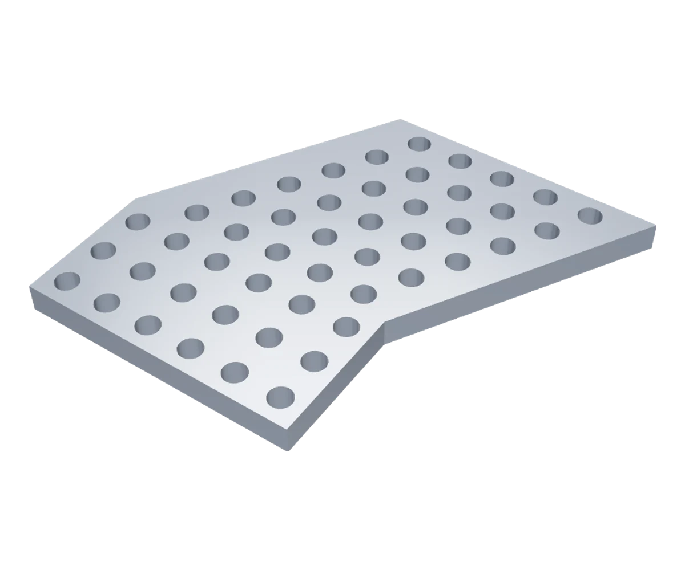
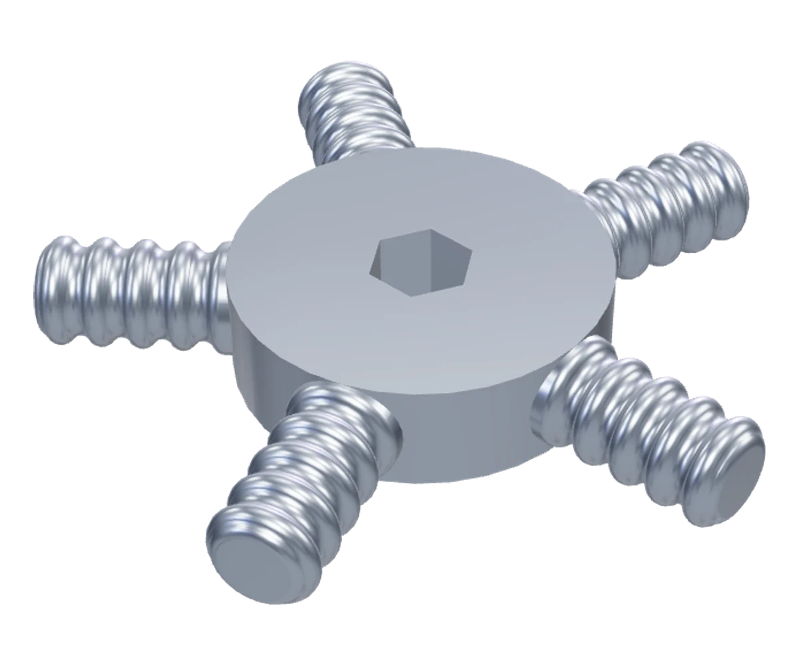

CAD beginnings
First parts.
New possibilities.
Two early Fusion 360 projects. A record of learning to think in components, dimensions and the space between them.
All workAn assembly study
Parts become
a system.

Loads when you choose to explore.
One of my first Fusion 360 assembly projects.
Explore the original model.
Learning to
think in 3D.
Working with Main Assembly helped me understand components as a system: how pieces relate in space, how structure is organized and how a design becomes more than one isolated shape.
It marks an early step toward the mechanical thinking I want to bring into robotics.
An individual part
Small component.
Careful decisions.

Loads when you choose to explore.
An early study in proportions, dimensions and fit.
Explore the original model.
Keep the
beginning visible.
These models document the start of my Fusion 360 work. They matter because learning is easier to see when the first attempts remain part of the story.
The next step is to improve mechanical modeling and connect CAD more deeply with robotics and code.